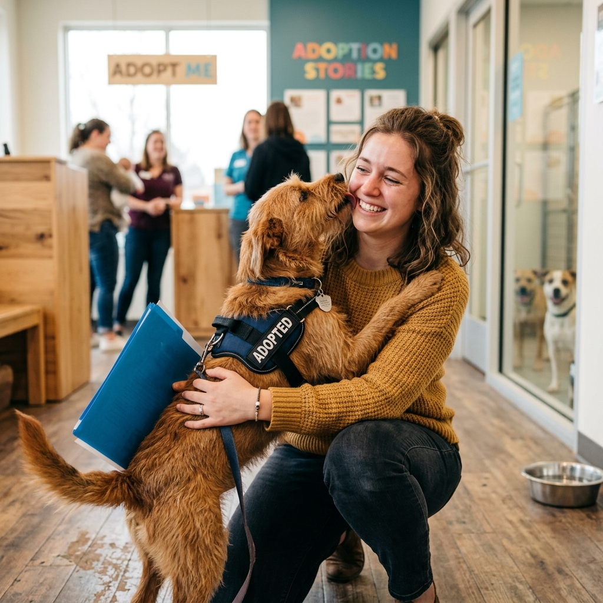

Sobre WauPiura
WauPiura nace del profundo amor hacia los animales y de la urgente necesidad de crear un cambio positivo en nuestra región. Somos una plataforma dedicada exclusivamente a conectar ciudadanos responsables, amorosos y comprometidos, con cientos de animales en situación de abandono que esperan ansiosamente por un hogar en toda la región de Piura.
Creemos firmemente en el poder de brindar segundas oportunidades. Sabemos que el amor incondicional que una mascota puede ofrecer no tiene límites, y que cada animal rescatado tiene el potencial de convertirse en el mejor compañero de vida. Trabajamos en colaboración con diversos refugios, rescatistas independientes y voluntarios para asegurar que cada proceso de adopción sea transparente, seguro y lleno de esperanza.
Nuestros Objetivos
- Fomentar la adopción responsable: Buscamos que cada adopción sea para toda la vida, concientizando sobre las necesidades y el cuidado adecuado de los animales.
- Reducir el abandono en las calles: Trabajar incansablemente y sumar esfuerzos para disminuir el número de perros y gatos viviendo en situaciones vulnerables.
- Educación comunitaria: Educar a la sociedad, empezando por los más pequeños, sobre el respeto, la empatía y la importancia de la esterilización.
- Crear una red de apoyo solidaria: Conectar a refugios locales, profesionales veterinarios y familias adoptantes para multiplicar el bienestar animal.
